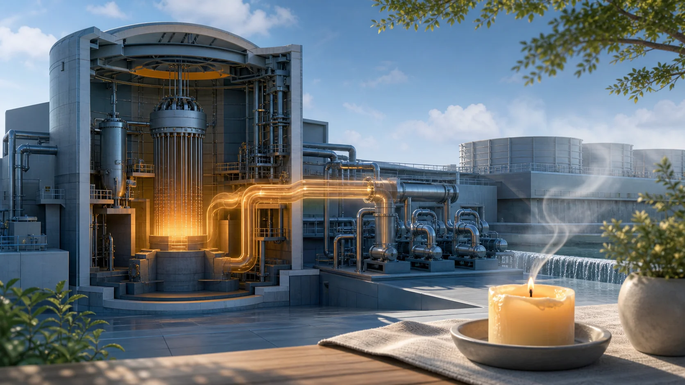
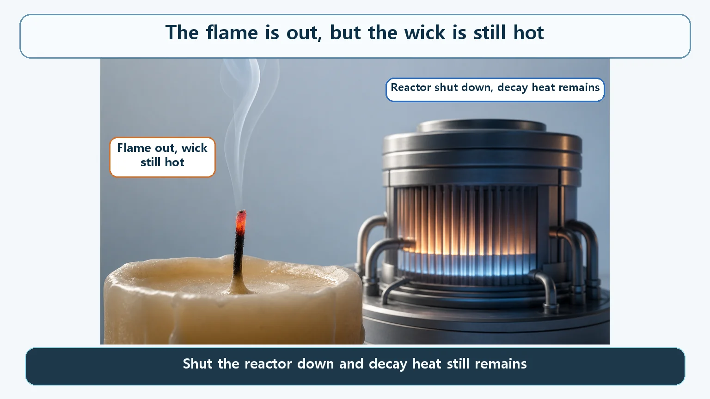
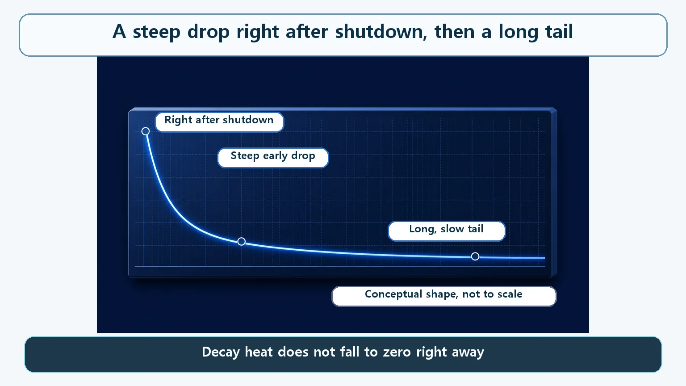

Heat Transfer & Thermal Hydraulics · 144
Blow Out the Candle and the Wick Stays Hot — Why Decay Heat Remains After a Reactor Shuts Down
Stopping the chain reaction is like blowing out a flame. The heat already stored in hundreds of radioactive fission products cannot be switched off.

Inserting the control rods stops the fission chain reaction within seconds, but the core keeps producing heat. Fission products already built up in the fuel are radioactive and keep decaying on their own half-lives. Right after shutdown this decay heat is roughly 6–7% of the rated thermal power; it then drops steeply and trails off in a long tail.
The flame is out, but the wick is still hot
We have all blown out the candles on a birthday cake. But have you ever looked closely at a wick right after the flame disappears? The fire is clearly out, yet the tip of the wick is still glowing red, and a thin thread of smoke keeps curling up for a while. Bring a finger close and it is still hot. "The flame is out" and "it is no longer hot" turn out to be two very different statements.

The same thing happens in a nuclear reactor. Only, instead of a candle wick, what lingers in the reactor core is something rather more persistent. Let's dig into why the heat doesn't vanish the moment a reactor is shut down.
You can switch off the flame, but not the heat in the wick
What does it mean to "shut down" a reactor? Control rods, which absorb neutrons well, are driven deep into the core to break the chain reaction in which one fission triggers the next. That action is remarkably fast: once the rods are in, new fissions essentially stop within a few seconds. Like the instant you blow out a candle, the "flame" of the chain reaction goes out almost immediately.
Here is the point many people miss. Stopping the chain reaction does not bring the core's heat output to zero along with it. Just as heat already soaked into the wick lingers for a while independently of the flame, something in the reactor core keeps producing heat independently of the chain reaction. It is called residual heat, or, more precisely, decay heat.
What that heat really is — fragments already made, still settling down
Each fission releases an enormous amount of energy, but not all of it comes out at that instant. Most of it (roughly the low 90s in percent) is released right at the moment of fission: the kinetic energy of the fission fragments flying apart, plus the neutrons and gamma rays emitted at the same moment.
The trouble is the rest. The new pieces created by fission, the fission products, are mostly unstable radioactive nuclides in their own right. As with any radioactive decay governed by a half-life, an unstable nuclide keeps decaying on its own, releasing energy, until it reaches a stable state. Fission products are no different. Through repeated beta decays and gamma-ray emissions they gradually become stable, and the energy released along the way makes up the remaining share of the total fission energy (roughly 6–7%). That is what decay heat is.
The important thing is that this is not some new physical phenomenon. It is the familiar rule, "unstable nuclides decay by themselves according to their half-lives," playing out on a very large scale inside a reactor core. There is only one real difference: the core holds not one or two such radioactive nuclides but hundreds of different kinds, built up in huge quantities over a long period of operation. Nuclides with names like iodine, cesium and strontium are spread through the core, each with its own half-life.
This is where the candle analogy comes back. Inserting control rods snuffs out the flame of "new fissions" as quickly as flipping a switch. But "hundreds of nuclides that already exist, each decaying on its own half-life" cannot be stopped by any switch, because a half-life, the time it takes a nuclide to fall to half its amount, is a fixed physical property. It is like the heat already soaked into the wick: you can't press it away with your hand.
In numbers — a steep drop, then a long tail
So how big is this heat, and how long does it last? Right after shutdown, decay heat starts at roughly 6–7% of the rated thermal power just before shutdown. In absolute terms that is far from small. For a reactor with a thermal output of about 3,000 megawatts, decay heat alone right after shutdown can reach roughly 200 megawatts, about as much heat as a whole small-to-medium fossil-fuel power plant gives off.
After that, decay heat falls quickly with time. But the rate of decline itself keeps slowing, so on a graph the curve drops steeply at first and then trails off into a long tail that refuses to get close to zero. About an hour after shutdown it is around 1–2% of rated power, and after a day it is below 1%, yet heat keeps lingering, very slowly, for a long time after that.
The reason for this shape also resembles the candle wick. Nuclides with short half-lives mostly decay away quickly, while those with long half-lives keep decaying a little at a time and stick around. The fast-burning part dies down early, and only the long-lasting part keeps smoldering.

| Time after shutdown | Decay heat (share of rated thermal power, approximate) |
|---|---|
| Right after shutdown | About 6–7% (about 200 MW for a 3,000 MW thermal reactor) |
| About 1 hour | Around 1–2% |
| About 1 day | Below 1% |
| Beyond | Keeps declining very slowly for a long time |
Easy to confuse
"Decay heat means the chain reaction is starting up again." No. With the control rods inserted, the core is subcritical, and no new fission chain reaction takes place. Decay heat is simply fission products that already exist undergoing radioactive decay on their own half-lives. It is not a rekindling of the fire.
Decay heat (why the heat exists) and the residual heat removal system (how the heat is taken away) answer different questions. The equipment that keeps cooling the core is a story of its own. This post is about why that equipment is needed at all: why the heat remains in the first place. Knowing the cause is what makes it clear why that equipment is designed the way it is.
Key takeaways
- Shutting a reactor down stops the fission chain reaction, but decay heat from the radioactive fission products already built up in the core does not disappear right away.
- This decay is not new physics: it is ordinary radioactive decay and half-life at work, on a large scale, across hundreds of nuclides in the core.
- Right after shutdown, decay heat is about 6–7% of rated power, far from small; it then drops steeply and trails off in a long tail.
- Just as a wick stays hot after you blow out the candle, putting out the "flame" of the chain reaction does not make the leftover heat vanish with it.
This is also the key to why coolant circulation can't simply be stopped once a reactor is shut down: the heat keeps coming for a long time.